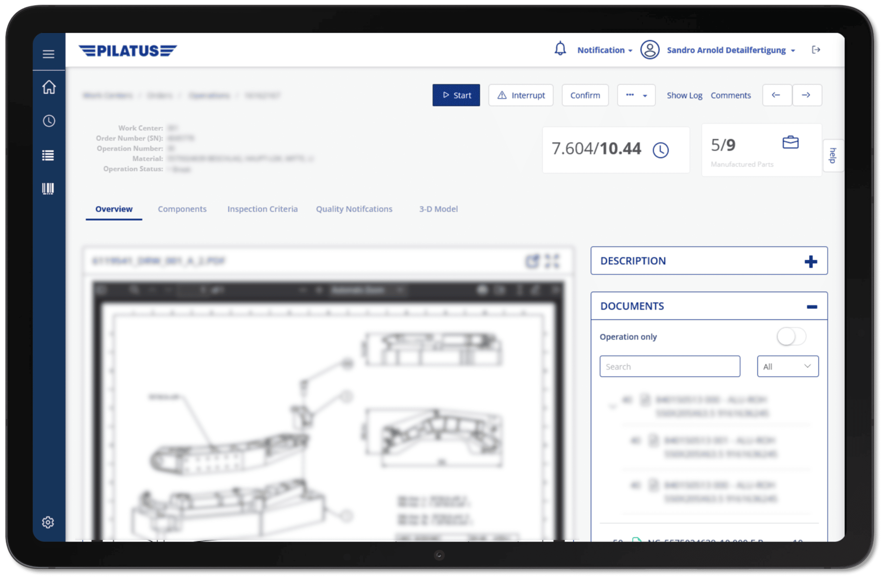
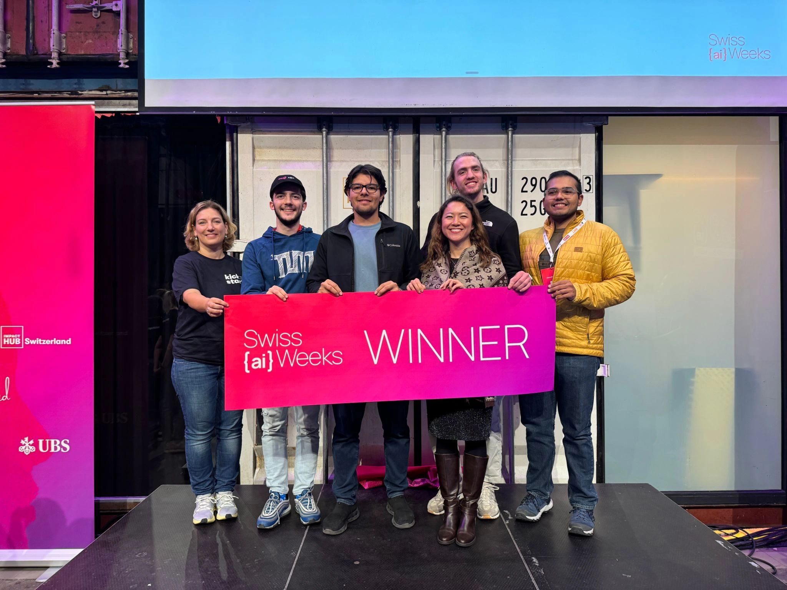

Andrei-Iulian Maftei
From PersonalWiki, the career encyclopedia
Informatics student, researcher, and software engineer working across visualization, high-performance computing, and intelligent systems.
Andrei-Iulian Maftei is a software engineer and B.Sc. Informatics student at the Technical University of Munich, pursuing a minor in Electrical Engineering. His work spans graph visualization, scientific C++ software, high-performance AI, robotics, and production software systems.
Since 2024, he has been a research assistant at TUM's CIT Chair, contributing to graph visualization and the NeoFOAM scientific-computing project. His work combines a researcher’s interest in rigorous methods with hands-on systems engineering, from real-time robotic localization to AI-assisted enterprise applications. At Avelios Medical, he develops backend services for clinical workflows. His project work also includes cooperative multi-robot navigation with reinforcement learning and language models for cybersecurity.
Education
Technical University of Munich
B.Sc. Informatics, minor in Electrical Engineering (Class of 2027), Munich, Germany.
His coursework includes Linear Algebra (1.0), Operating Systems (1.3), Machine Learning, and Signal Processing. Alongside the degree, he completed TUM’s graduate-level Summer School on HPC Driving AI in Heilbronn, studying AI optimization with academic and industry practitioners.
Research and professional experience
Maftei’s research practice brings together visual computing, numerical software, and high-performance AI. His professional work extends that foundation into reliable services and data workflows for complex domains.
TUM CIT Chair October 2024–present
Research assistant · Munich and Heilbronn, Germany
At the intersection of visual analytics and algorithms, Maftei works with Prof. Dr. Stephen Kobourov on graph bundling. He developed a visual clustering metric and tools for studying patterns produced by knitting graphs, contributing to two papers and to a broader research programme on interpretable visual structure.

With Prof. Dr. Hartwig Anzt, he contributes to the NeoFOAM C++ project. The work includes Python bindings, simulated CFD workflows, and the evaluation of two AI workflows with performance improvements of up to 30%, while following disciplined collaborative development and advanced Git practices.

The appointment is complemented by the TUM Summer School on HPC Driving AI, where he explored high-performance approaches to AI optimization at graduate level.
Industry appointments 2026–present

Avelios Medical August 2026–present
Working Student, Software Engineering Backend · Munich, Germany
He contributes to deployment and service synchronization for Docker-based microservices supporting clinical workflows. He also created an internal tool used by more than 20 solution engineers and product managers, extending his work from backend infrastructure to tools used across product and implementation teams.
He implements mappings between hospital source data and application data models, using PostgreSQL and Elasticsearch for storage and retrieval. His Java microservices communicate through gRPC to support nursing and patient-care workflow features.

Siemens AG
Working Student, AI for Manufacturing Industries · Munich, Germany
He develops proof-of-concept enterprise applications by integrating generative-AI APIs with Mendix, reducing initial prototyping time by 10%. He also engineers Python, SQL, and Power BI workflows that extract and analyze large datasets from enterprise systems including SAP and Salesforce.
Optiver Career Kickstarter November 2026
Selected participant, Software Engineering · Amsterdam, Netherlands
Maftei was selected as one of 30 students for the Software Engineering track of Optiver’s Career Kickstarter programme. This selection sits alongside his work on low-latency trading infrastructure at Muniquant and his second-place finish in the Optiver Campus Trading Challenge.
Leadership and applied work
Cooperative multi-AGV navigation and scheduling
Multi-agent reinforcement learning · Munich, Germany
Maftei developed a multi-agent reinforcement learning framework for cooperative navigation by automated guided vehicles (AGVs). Built with Python and NVIDIA Isaac Sim, the framework uses PPO and MAPPO and includes custom observation spaces, reward functions, and training pipelines.
Coordination in warehouse environments
The project combines multi-robot coordination and task scheduling under partial observability. It supports collision avoidance and cooperative trolley transportation in dynamic warehouse environments, bringing navigation and shared transport tasks into the same learning framework.
NahaLM Cybersecurity research project
For NahaLM, Maftei adapted an open-source language model using more than 100,000 Common Vulnerabilities and Exposures (CVEs). Designed with resource-constrained small enterprises in mind, the system identifies vulnerabilities and generates actionable remediation plans and defensive recommendations.
The work covered data collection and cleaning, feature engineering, layer freezing, and quantitative evaluation of model effectiveness.
Muniquant Student club · Munich, Germany
Co-founder and low-level department lead
As Muniquant’s low-level department lead and a founder, he built a stable, low-overhead C++ platform for market-trade execution. A reworked order-queue strategy produced a reported 2000% improvement in code latency compared with the previous stack. His technical work focused on trade execution and order processing, where reducing software overhead was a central design goal.
He co-founded and scaled the organization to 15 active members, established industry partnerships, and helped secure funding for dedicated infrastructure and software licensing. The role combined systems programming with responsibility for the group’s technical resources and growth.
RoboTUM Student club · Munich, Germany
Drone vision development
In RoboTUM’s drone-vision work, he developed a model that detected waste for autonomous collection with 90% accuracy.
ByteForce Robotics Club February 2020–August 2024
Lead Programmer · Galați, Romania

As lead programmer, Maftei engineered a real-time localization system based on an Extended Kalman Filter. The system fused asynchronous readings from a NavX Micro gyroscope, three-wheel odometry, and camera-based AprilTag tracking through Perspective-n-Point estimation.
He designed an asymmetrical motion-profile algorithm with dynamic acceleration and deceleration slopes, reducing oscillation and residual vibration during fast state transitions. A two-second rollback structure preserved prior states and covariances, allowing late sensor readings to be incorporated through recalculation for reliable real-time operation.
The team achieved an FTC Robotics World Record in the 2023–2024 season, with a 309-point global solo score, and received the Design Award.
Recognition

- Honorable Mention / Best Paper recognition, EuroVis 2026.
- Winner, Swiss {ai} Weeks Zürich Hackathon, 2025.
- Aci.dev distinction, {Tech: Europe} Karlsruhe Hackathon.
- Second place, Optiver Campus Trading Challenge.
- Gold Medal, Romanian National Informatics Olympiad.
- Second place, Forgis Robotics Hackathon; over 100k raised with the high-school robotics team.

Skills
His skills combine systems programming, applied AI, robotics control, and deployment practices, with evidence across research, internships, student clubs, and competitive robotics.
| Area | Strengths | Evidence |
|---|---|---|
| Languages | Go, C++ (CUDA), Python, Java, Kotlin, SQL | NeoFOAM C++ contributions, Java healthcare microservices, robotics control systems, and C++ trading infrastructure. |
| AI and machine learning | PyTorch, PPO/MAPPO, multi-agent reinforcement learning, computer vision, OpenCV, agentic AI, RAG, vector databases | NahaLM cybersecurity model, Siemens generative-AI prototypes, RoboTUM drone vision model, cooperative multi-AGV training, and HPC Driving AI study. |
| Systems and robotics | NVIDIA Isaac Sim, multi-robot coordination, real-time systems, sensor fusion, EKF, ARM, Linux | ByteForce localization stack combining gyroscope, odometry, AprilTag tracking, motion profiling, and rollback-based asynchronous sensor handling. |
| Frameworks and tools | Docker, gRPC, PostgreSQL, Elasticsearch, FastAPI, Node.js, Pandas, Matplotlib, Git, Firebase, Amazon SageMaker, Jupyter Notebooks | Docker-based microservice deployment, enterprise data workflows, and advanced Git practices in research and C++ project environments. |
| Research and leadership | Graph visualization, algorithms, student team leadership, fundraising | Two graph visualization papers, student club leadership, 15 active members recruited at Muniquant, and more than 100k raised with the high school robotics team. |